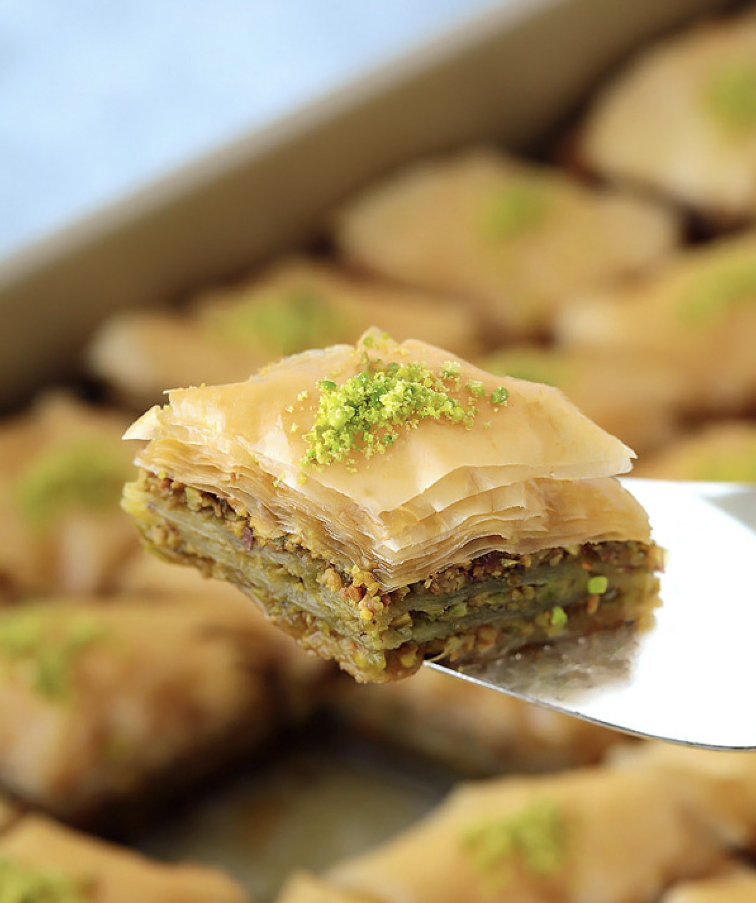
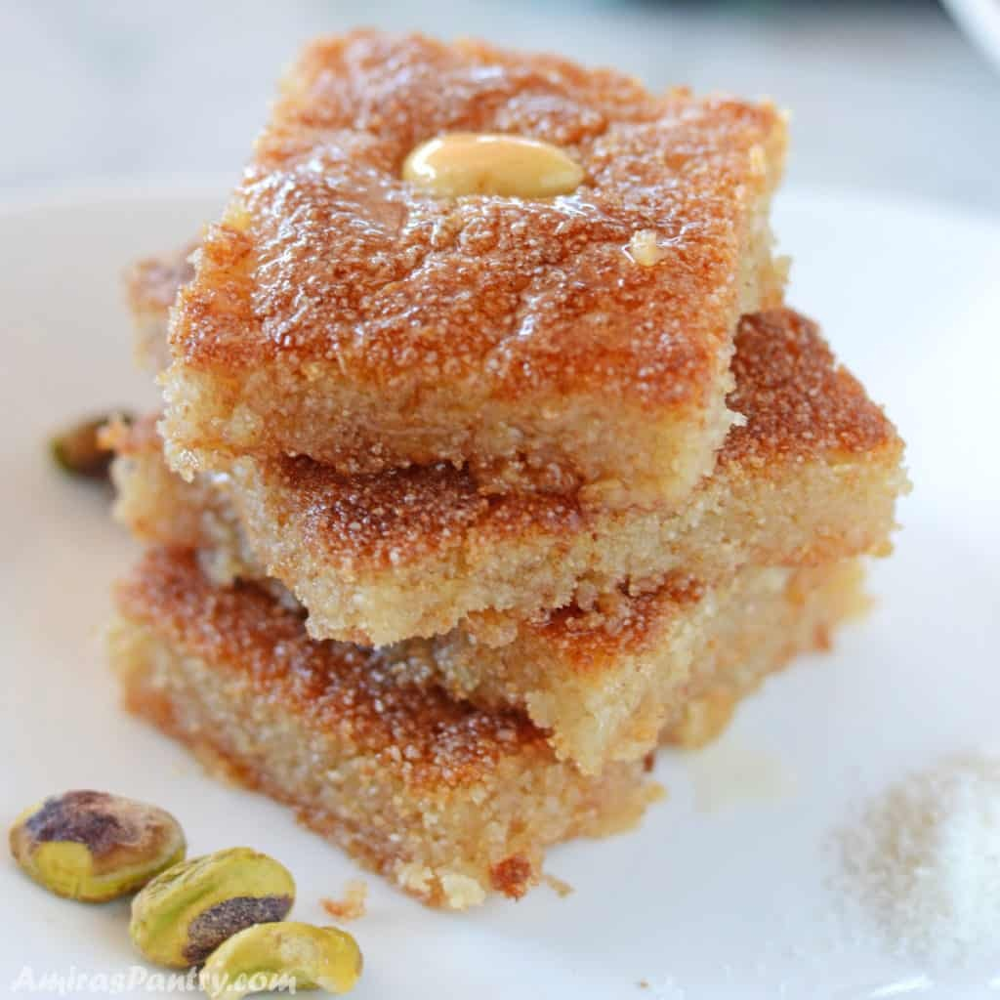
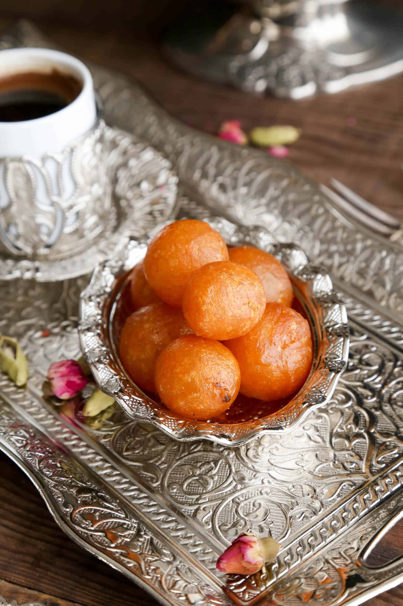
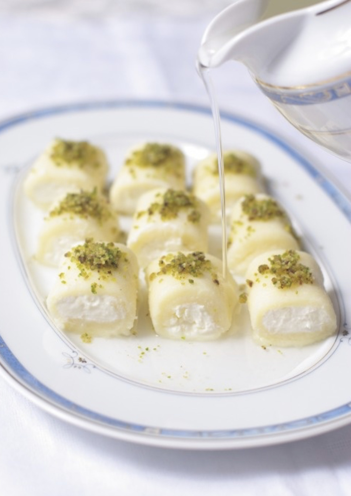
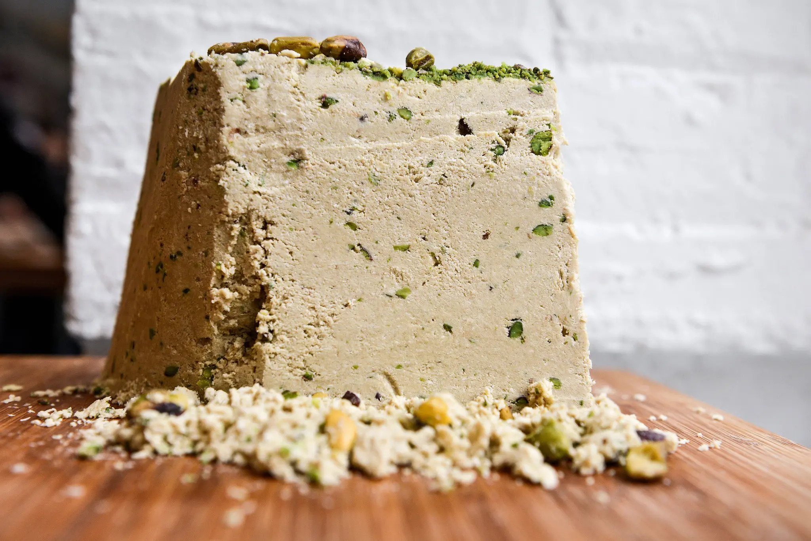
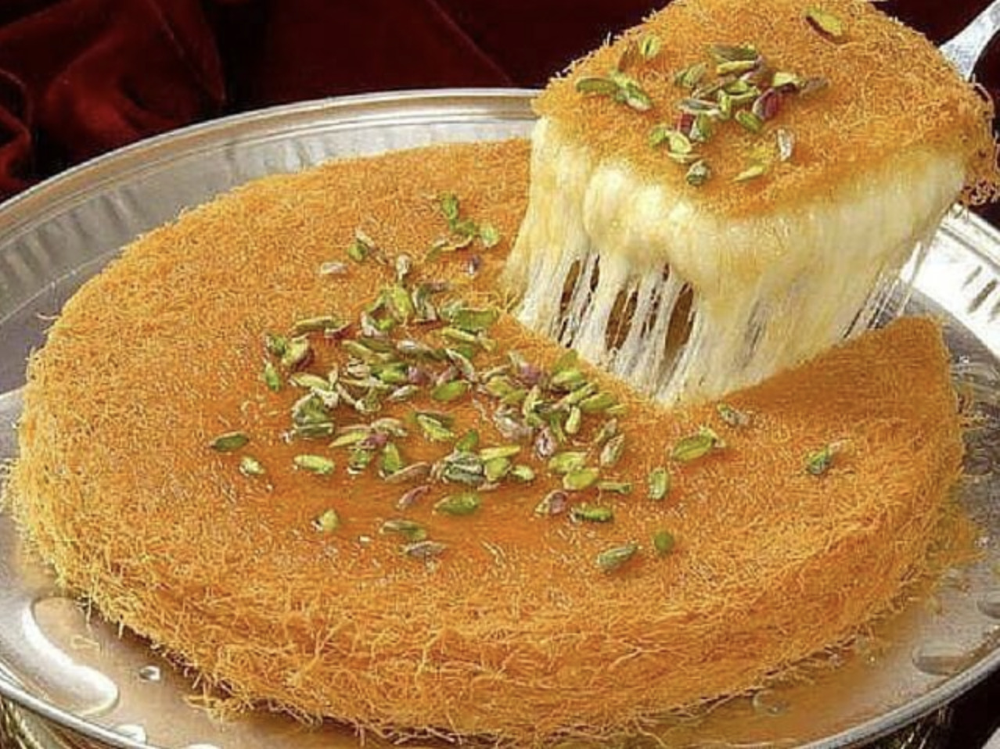
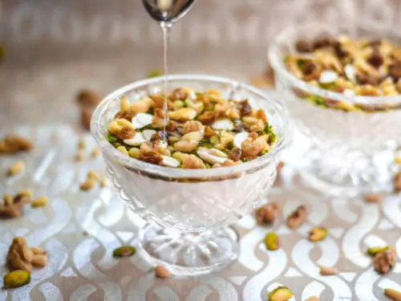
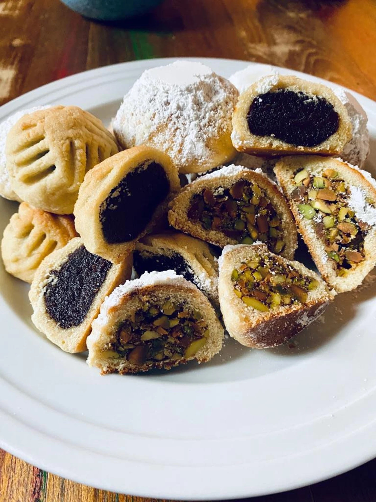
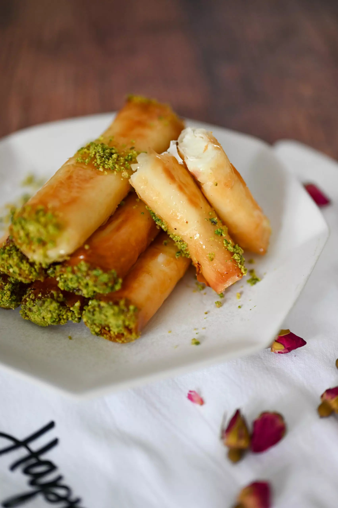

The Mediterranean cuisine comprises of many mouth watering Middle Eastern desserts. Here some of my favorites!
Baklava is a layered pastry dessert made of
filo pastry, filled with chopped nuts, and sweetened with syrup or honey. Baklava originated in Turkey.Basbousa is a sweet, syrup-soaked semolina cake that originated in Egypt,
although it is common in other countries. The semolina batter is baked in a sheet pan, then sweetened with orange flower water, rose water or simple syrup, and typically cut into diamond shapes or squares. Zalabya is a yeasted dough that is fried
and then sweetened with syrup.A delectable Syrian dessert made from rolls of soft, sweet cheese dough that gets stuffed with clotted cream,
adorned with pistachios and rose petal jam.Halva s a dense, sweet confection and the two most common variations are flour-based halva and a
nut and seed-based halva.Knafeh is a traditional Middle Eastern dessert made with spun pastry called kataifi, soaked in sweet,
sugar-based syrup, and typically layered with cheese, or with other ingredients such as clotted cream, pistachio or nuts, depending on the region.Mahalabia (Muhallebi) is a sweet milk pudding that will take on whatever flavour that is added. Traditionally,
cardamom is used and it is garnished with a dusting of cinnamon. However, sometimes rose water or orange blossom water is used for flavoring.Ma'amoul is a filled butter cookie made with semolina flour. The filling can be made
with dried fruits like figs or dates or nuts such as pistachios or walnuts and occasionally almonds. Znoud el sit are cream filled phyllo dough fried until golden and crispy
and dipped in orange blossom and rose water scented sugar syrup.